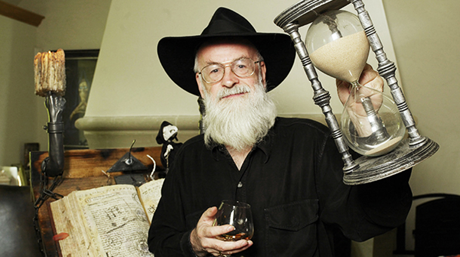
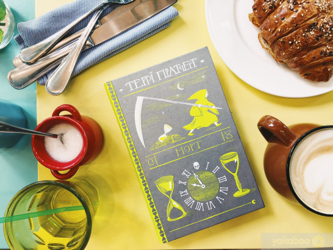

Про автора
Террі Пратчетт
Террі Пратчетт(вікіпедія) - один з найпопулярніших англійських авторів. Його книги виходять багатомільйонними тиражами. А без придуманого ним Плаского світу жанр фентезі був би іншим. Тим, хто любить глибоку, іронічну і при цьому мудру і злободенну фантастику, слід купити книги Террі Пратчетта, тому що письменник дивно проникливий, розумний і талановитий.
Його творіння так чи інакше зачіпають всі сторони життя нашого світу. У них гармонійно переплітаються здатність проникати в найпотаємніші куточки душі психологізм, добрий, щирий сміх та вміння співпереживати. Тому романи та оповідання Террі Пратчетта хочеться перечитувати багато разів, що в літературі подібної спрямованості рідкість.
Короткі відомості про книгу
Видавництво - Видавництво Старого Лева
Рік видання - 2018
Рік першого видання - 1987
Кількість сторінок - 304 ст.
Про що книга
Роман «Морт» відкриває цикл серії «Дискосвіт», у якому головним персонажем є Смерть. Та це не означає, що книжка моторошна, адже у світі Террі Пратчетта Смерть рибалить, філософує, любить кошенят і смачні страви, мріє про відпустку і врешті просто виконує свою роботу: доправляє душі в інший світ. Думки про відпочинок спонукають Смерть обрати собі в підмайстри сільського хлопця Морта.
Чи впорається незграбний та не дуже здібний до господарювання Морт із завданнями по ту сторону життя і чи зможе опанувати непростий фах Смерті? Таке учнівство обіцяє хлопцеві кар’єрне зростання, поліпшення іміджу, розширення кругозору та численні відрядження. Однак Мортові співчутливість і романтичні захоплення можуть не тільки завадити роботі, а й поставити під загрозу цілісність світобудови.
Рецензії
Олеся Кізима
Егегей, чи готові ви заприятелювати зі... Смертю? Ну, не зовсім потоваришувати, а стати довіреною особою, себто підмайстром, таким собі виконуючим обов'язки під час відсутності начальника на роботі? Таки-таки, ви усе правильно зрозуміли: пан Смерть (так, так, саме пан) може дозволити собі доручити свою пряму функцію іншому! Тобто доправляти душі померлих із сего світу туда до святого Петра. Злякалися? Ні? Що ж, тоді гайда знайомитися ближче!
Морт (скорочено від Мортімер) - шістнадцятирічний сільський хлопчина. На думку батьків, цілковито нетямущий ані в господарстві, ані в жениханні. Такий собі Іванко-дурник. Щоб якось спекатися парубка-нездари з хати та й сякого-такого ремесла та навчити, батьки вирішують прилаштувати Морта хоч десь підмайстром. І от на ярмарку відбувається доленосна зустріч Морта та дивакуватого чоловіка, одягненого у плащ з каптурем... Так закручується цікавезний сюжет співпраці Смерті та живої людини, яка, попри прогрес та неабияку успішність в освоєнні унікальної ,,професії", все ж таки залишається людиною. Тобто не втрачає ані співчутливості, ані здатності покохати. Тільки чим може обернутися слабкість-(сила) Морта, який наважується не відправити на той світ прекрасну принцесу? А тим, що порушується рівновага, баланс, гармонія світоустрою, тобто зчиняється такий хаос, що огого! Чи можна виправити скоїне? І якою ціною?
,,Морт" -- і ще одна книжка із серії ,,Дискосвіт" геніального англійського майстра гумористично-інтелектуального фентезі Террі Пратчетта. Власне, ця історія відкриває цілий підцикл, де головним фігурантом усіх подій є його величність пан Смерть. Переклад здійснила Ольга Любарська. Дизайн видання -- творчий дует ,,Аґрафка".
Ігор Грогоренко
Неймовірно цікавий Террі Прачетт та його роман «Жнець»-як завжди відносить читача в море пригод та змушує замислитись і поринути у глибокі роздуми і про вічне життя і взагалі про сенс вічного життя. Написано роман з гумором та іронією про людські вади. Мене здивувало те, що персонаж Смерть тут іде у чоловічому відмінку.
Якщо коротко про що роман, то персонаж Смерть втратив власне свою роботу. Але пустим посада довго не перебувала і на його місце прийшов працювати більш точний та відповідальніший працівник, котрий не виходить за рамки правил і не замислюється про речі, що не мають стосунку до виконання своїх обов’язків. Смерть стає безробітним, а коса тепер у нього для роботи яку роблять усі смертні, а не для забирання людських душ. Він вирішує шукати свою долю, отримує власне ім’я Білл Двері і поселяється жити у самотньої панни Літунки і стає смертним як і всі живі люди. Автор також дуже цікаво показує іншу сторону життя, де відсутня смерть. Коли до чарівника і не збирається приходити смерть, а тому він буде змушений жити вічно. Все поринає у такий собі хаос, бо рівновага відсутня.